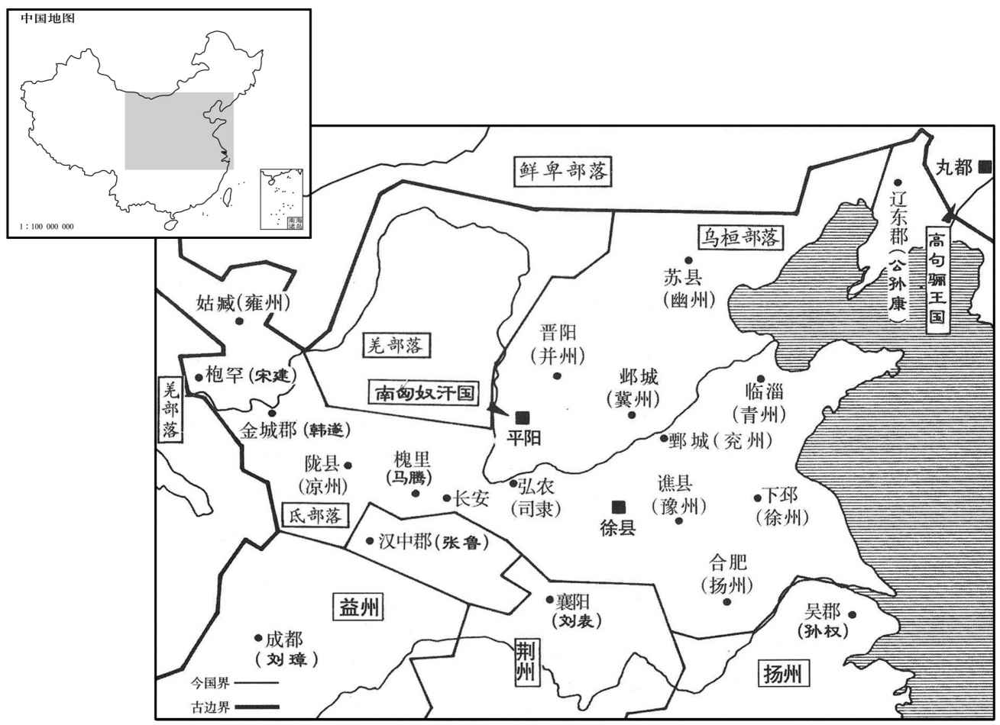
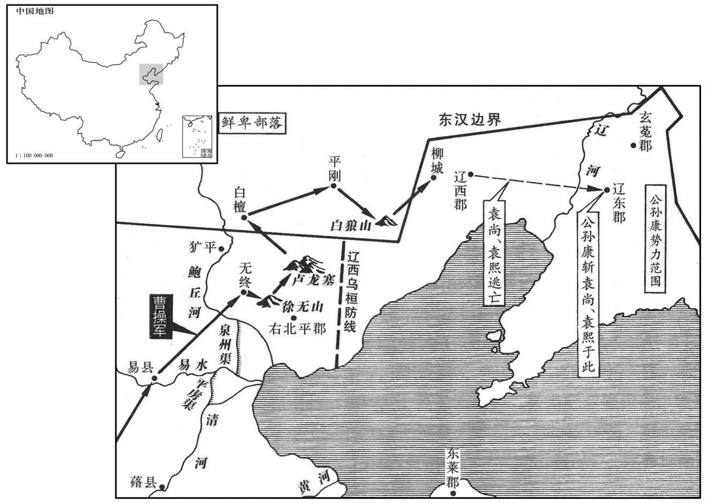

公元207年资治通鉴：本年记事、原文与白话对照
按原书编年位置阅读；追叙和史论不等于本年发生的事件。白话采用所据译本，缺译不以生成译文补齐。
卷65 · 本年记事
公元207年 · 汉孝献皇帝建安十二年
十二年〔（丁亥、二○七）〕
本年事件索引（现代整理）

本年形势与背景参考图
春，二月，曹操自淳于还邺。丁酉，操奏封大功臣二十余人，皆为列侯；因表万岁亭侯荀彧功状，〔九域志：郑州有万岁亭，彧所封也。〕三月，增封彧千户。又欲授以三公，彧使荀攸深自陈让，至于十数，乃止。
春季，二月，曹操从淳于返回邺城。丁酉（初五），曹操上奏献帝并得到批准，封大功臣二十余人，都为列侯。又上表称赞万岁亭侯荀的功劳。三月，为表彰荀，在他原来侯国封户的基础上，又增加一千户。还准备任命荀为三公，荀派荀攸恳切地表达自己的辞让之意，先后达到十余次，曹操才同意。
曹操将击乌桓。诸将皆曰：「袁尚亡虏耳，夷狄贪而无亲，岂能为尚用。今深入征之，刘备必说刘表以袭许，〔说，输芮翻。〕万一为变，事不可悔。」郭嘉曰：「公虽威震天下，故恃其远，必不设备，因其无备，卒破〔【章：甲十二行本「破」作「然」；乙十一行本同；孔本同；张校同。】〕击之，可破灭也。〔卒，读曰猝。〕且袁绍有恩于民夷，而尚兄弟生存。今四州之民，徒以威附，德施未加，〔施，式豉翻。〕舍而南征，〔舍，读曰舍。〕尚因乌桓之资，招其死主之臣，〔言欲为其主致死，而留滞不得逞者。〕胡人一动，民夷俱应，以生蹋顿之心，成觊觎之计，〔觊，音冀。觎，音俞。〕恐青、冀非己之有也。表坐谈客耳，自知才不足以御备，重任之则恐不能制，轻任之则备不为用，虽虚国远征，公无忧矣。」操从之。行至易，〔易县，前汉属涿郡，后汉省。宋白曰：汉易县故城，在今涿州归义县东南十五里，大易故城是。〕郭嘉曰：「兵贵神速。今千里袭人，辎重多，难以趋利，〔重，直用翻；下同。趋，七喻翻。〕且彼闻之，必为备；不如留辎重，轻兵兼道以出，掩其不意。」
曹操准备出兵征讨乌桓，将领们都说：“袁尚只不过是个逃亡罪犯，乌桓人贪得无厌而不念旧情，岂能受袁尚利用。如今大军深入塞外征乌桓，刘备必然劝说刘表乘虚袭击许都，万一发生变化，事情就后悔不及了。”郭嘉说：“您虽然威震天下，但乌桓人倚仗距离遥远，一定不会预先防备，乘其不备，突然袭击，可以一战告捷。况且，袁绍对这一地区的百姓以及塞外的异族有恩德，而袁尚兄弟现在还活在世上。如今冀、青、幽、并四州的百姓，只是因畏惧而服从我们，并没有受过我们的恩德。如果我们离开这里而率军南征，袁尚利用乌桓的武力作资本，招集愿为恩主效死的部属，乌桓人一动，四州的百姓及异族都会纷纷响应，这会使蹋顿动心，生出非分的打算，恐怕青州与冀州就不会再在您的控制下了。刘表不过是个只会坐在那里发议论的人，他自知才干不能驾御住刘备，重用刘备则害怕控制不住，轻用则刘备不会为他所用。因此，即使我们调走全国兵力远征，您也不必担扰。”曹操听从了郭嘉的意见。大军进发到易县，郭嘉提议说：“兵贵神速，如今远涉千里进行奇袭，辎重太多，难以掌握先机。而且假如乌桓人得到消息，必然加强戒备；不如留下辎重，军队轻装以加倍的速度急进，出其不意地进攻。”
初，袁绍数遣使召田畴于无终，〔畴保无终，见六十卷初元四年。数，所角翻。〕又即授将军印，使安辑，所统，畴皆拒之。及曹操定冀州，河间邢颙谓畴曰：「黄巾起来，二十余年，海内鼎沸，百姓流离。今闻曹公法令严。民厌乱矣，乱极则平，请以身先。」遂装还乡里。〔颙，鲁容翻。颙从畴游，积五年乃归。先，悉荐翻。〕畴曰：「邢颙，天民之先觉者也。」〔伊尹曰：予，天民之先觉者也。此以道自任者也。若邢颙之先觉，特见几耳。〕操以颙为冀州从事。畴忿乌桓多杀其本郡冠盖，〔谓郡中名胜之士。〕意欲讨之而力未能。操遣使辟畴，畴戒其门下趣治严。〔趣，读曰促。严即装也。自东都避明帝讳，改装曰严，后遂因之。〕门人曰：「昔袁金慕君，礼命五至，君义不屈；今曹公使一来而君若恐弗及者，何也﹖」〔使，疏吏翻；下同。〕畴笑曰：「此非君所识也。」遂随仗者到军，拜为蓨令，〔蓨县，前汉属信都，后汉属勃海。师古曰：蓨，音条。〕随军次无终。
起初，袁绍几次派使者到无终县去召田畴，又派人授予田畴将军的印信，让田畴召抚所统部众，田畴都拒绝了。到曹操平定冀州后，河间人邢对田畴说：“黄巾军起事以来，已二十多年，天下动荡不定，百姓流离失所。如今，听说曹公法令严明，百姓对战乱已经厌恶，乱到极点，就会归于平静，请让我先去试探一下。”于是，邢收拾行装，返回家乡。田畴说：“邢是个先知先觉的人。”曹操委任邢为冀州从事。田畴忿恨乌桓人经常杀害本郡著名的士大夫，想讨伐乌桓而力量不够。曹操派使者来征召田畴，田畴要他的部属赶快为他治理行装，部属说：“以前，袁绍仰慕您的名声，曾五次礼聘，您一直拒绝；如今，曹操的使者一来，您就好像迫不及待，这是什么原因？”田畴笑着说：“这就不是你们所能知道的了。”他随同使者一起到曹操军中，被任命为令，随大军进驻无终县。
时方夏水雨，而滨海洿下，〔洿，汪胡翻。〕泞滞不通，虏亦遮守蹊要，〔蹊，径路也；蹊要，径路要处也。泞，乃定翻。〕军不得进。操患之，以问田畴。畴曰：「此道，秋夏每常有水，浅不通车马，深不载舟船，为难久矣。旧北平郡治在平冈，道出庐龙，达于柳城；〔前汉右北平郡治平冈县，后汉省平冈县，改治土垠县。垠，音银。贤曰：土垠故城，在今平州西南。水经注曰：自无终东出庐龙塞，又东越青陉至凡城二百许里。自凡城东北出，趣平冈，可百八十里，血黄龙则五百里。故田畴引军出庐龙塞，堑山堙谷，百百余里，径白檀，历平冈，登白狼山，望柳城也。〕自建武以来，陷坏断绝，垂二百载，〔载，子亥翻。〕而尚有微径可从。今虏将以大军当由无终，不得进而退，懈弛无备。若嘿回军，从庐龙口越白檀之险，出空虚之地，路近而便，掩其不备，蹋顿可不战而禽也。」操曰：「善！」乃引军还，而署大木表于水侧路傍曰：「方今夏暑，道路不通，且俟秋冬，乃复进军。」〔复，扶又翻。〕虏候骑见之，诚以为大军去也。〔骑，奇寄翻。〕
当时正赶上夏季，大雨不止，沿海一带泥泞难行，而且乌桓人还在交通要道派兵把守，曹军受阻无法前进。曹操十分忧虑，向田畴询问对策。田畴说：“这条道路每逢夏秋两季常常积水，浅不能通车马，深不能载舟船，是长期不能解决的难题。原来右北平郡府设在平冈，道路通过卢龙塞，到达柳城。自从光武帝建武以来，道路陷坏，无人行走，已将近二百年，但仍留有道路的残迹可循。现在乌桓人以为无终是我们大军的必经之路，大军不能前进，只好撤退，因此他们放松以了戒备。如果我们默默地回军，却从卢龙塞口越过白檀险阻，进到他们没有设防的区域，路近而行动方便，攻其不备，可以不战而捉住蹋顿。”曹操说：“很好！”于是率军从无终撤退，在水边的路旁留下一块大木牌，上面写着：“现在夏季暑热，道路不通，且等到秋冬，再出兵讨伐。”乌桓人的侦察骑兵看到后，当真以为曹军已经离去。
操令畴将其众为乡导，〔将，即亮翻。乡，读曰向。〕上徐无山，〔史记正义：徐无山，在右北平徐无县西北。徐无山，即田畴所保聚处。〕堑山堙谷，五百余里，经白檀，历平冈，涉鲜卑庭，〔白檀县，属右北平郡。宋白曰：白檀故城，在檀州燕乐县界。此时鲜卑庭已在右北平郡界，盖慕容廆之先也。堑，七艳翻。〕东指柳城。未至二百里，虏乃知之。尚、熙与蹋顿及辽西单于楼班、〔楼班，丘力居之子也。〕右北平单于能臣抵之等〔左北平石城县西。乌丸传：逆战于凡城，则白狼山盖在凡城。〕卒与虏遇，〔卒，读曰猝。〕众甚盛。操车重在后，〔车重，即辎重。重，直用翻。〕被甲者少，左右皆惧。〔被，皮义翻。少，诗沼翻。〕操登高，望虏阵不整，乃纵兵击之，吏张辽为前锋，虏众大崩，斩蹋顿及名王已下，胡、汉降者二余万口。〔降，户江翻。〕
曹操命令田畴率领他的部众作向导，上徐无山，凿山填谷，行进五百余里，经过白檀、平冈，又穿过鲜卑部落的王庭，向东直指柳城。距离二百余里时，乌桓人才知道。袁尚、袁熙与蹋顿以及辽西单于楼班、右北平单于能臣抵之等率领数万名骑兵迎击曹军。八月，曹操登上白狼山，突然与乌桓军相遇，而乌桓军军力强盛。曹军车辆辎重都在后边，身披铠甲的将士很少，曹操左右的人都感到畏惧。曹操登高，看到乌桓军队不整，就纵兵攻击，派张辽为先锋，乌桓军队大乱，斩杀蹋顿和各部落王爷及以下的乌桓首领，投降的胡人与汉人共有二十余万。
辽东单于速仆丸〔速仆丸，即苏仆延，语有轻重耳。〕与尚、熙奔辽东太守公孙康，其众尚有数千骑。彧劝操遂击之，操曰：「吾方使康斩送尚、熙首，不烦兵矣。」九月，操引兵自柳城还。公孙康欲取尚、熙以为功，乃先置精勇于貛中，然后请尚、熙入，未及坐，康叱伏兵禽之，遂斩尚、熙，井速仆丸首送之。诸将或问操：「公还而康斩尚、熙，何也﹖」操曰：「彼素畏尚、熙，吾急之则并力，缓之则自相图，其势然也。」操枭尚首，〔枭，古尧翻。〕令三军：「敢有哭之者斩！」牵招独设祭悲哭，〔牵招先为袁氏从事，故祭哭之。〕操义之，举为茂才。
辽东单于速仆丸与袁尚、袁熙投奔辽东郡太守公孙康，跟随他们的还有数千名骑兵。有人劝曹操乘势追击，曹操说：“我将使公孙康送来袁尚、袁熙的人头，不必再劳师动众。”九月，曹操率大军从柳城班师。公孙康想要杀死袁尚、袁熙，作为对朝廷立下的功劳，于是先埋伏精兵在马厩中，然后请袁尚、袁熙进来，他们还没来得及入座，公孙康叫出伏兵，把他们捉住。于是斩杀袁尚、袁熙，连同速仆丸的人头一起送给曹操。将领中有人问曹操：“您已退军而公孙康杀死袁尚、袁熙，这是为什么？”曹操说：“公孙康一向畏惧袁尚、袁熙，我如果急攻，他们就会合力抵抗；缓和时，他们就会自相残杀；是形势使他们这样做的。”曹操把袁尚的头颅悬挂起来示众，号令三军：“有敢于哭泣的，处斩！”牵招却独自设祭，放声悲哭，曹操认为他是忠于故主的义士，推荐他为茂才。

时天寒且旱，二百里无水，军又乏食，杀马数千匹以为粮，凿地入三十余丈方得水。既还，科问前谏者，〔科，条也。问前谏者，科具其姓名也。〕众莫知其故，人人皆惧。操皆厚赏之，曰：「孤前行，乘危以徼幸，〔徼，坚尧翻。〕虽得之，天所佐也，顾不可以为常。诸君之谏，万安之计，是以相赏，后勿难言之。」
当时天寒，又遇上大旱，二百里没有水，军队缺乏粮食，只好杀死几千匹战马作为军粮，挖地三十余丈才见到水。大军返回后，曹操调查以前劝阻他出兵征讨乌桓的人，众人不知道是因为什么，都心怀畏惧。曹操对劝阻者都加以厚赏，对他们说：“我先前出兵，实在危险，虽然侥幸获胜，全是靠上天保佑，不能作为常规。你们的意见，才是万全之计，所以加以赏赐，以后不要害怕提相反的意见。”
冬，十月，辛卯，有星孛于鹑尾。〔蔡邕曰：自张十二度至轸六度，谓之鹑尾之次。陈卓曰：自张十七度至轸十一度，谓之鹑尾；于辰在巳。〕
冬季，十月，辛卯（初三），有异星出现在鹑尾星次。
乙巳，黄巾杀济南王赟。〔贤曰：赟，河间孝王开五代孙。灵帝立其父康为济南王，以奉孝仁皇祀。济，子礼翻。赟，于伦翻。〕
乙巳（十七日），黄巾军杀死济南王刘。
师还，论功行赏，〔还，从宣翻，又如字。〕以五百户封田畴为亭侯。畴曰：「吾始为刘公报仇，率众遁逃，〔事见六十卷初平四年。为，于伪翻。〕志义不立，反以为利，非本志也。」固让不受。操知其至心，许而不夺。〔不夺其志也。孔子曰：匹夫不可夺志。〕
大军回到邺城，论功行赏，封田畴为亭侯，封地有五百户。田畴说：“我当初是为刘虞报仇，率众逃亡，我的志愿没有达到，反而以此获利，这不是我的本意。”坚决辞让，不肯接受封爵。曹操知道田畴是出于真心，同意他的辞让，没有勉强他接受。
操之北伐也，刘备说刘表袭许，〔说，输芮翻。〕表不能用。及闻操还，表谓备曰：「不用君言，故为失此大会。」〔犹言大机会也。〕备曰：「今天下分裂，日寻干戈，事会之来，岂有终极乎！若能应之于后者，则此未足为恨也。」〔豪桀之言，故自与常人不同。〕
曹操出兵北伐乌桓时，刘备劝刘表发兵袭击许都，刘表不能用他的计策。等听到曹操得胜班师的消息，刘表对刘备说：“没有听你的话，结果失掉这个大好机会。”刘备说：“如今天下分裂，战争不断，机会的到来，难道会有终极吗？要是能不放过以后的机会，则这次也不足以遗憾。”
是岁，孙权西击黄祖，虏其人民而还。
这一年，孙权向西攻击黄祖，俘虏百姓后返回吴郡。
权母吴氏疾笃，引见长昭等，属以后事而卒。〔属，之欲翻。卒，子恤翻。〕
孙权的母亲吴夫人病危，召见张昭等人，嘱托后事之后去世。
初，琅邪诸葛亮寓居让阳降中，〔亮从父玄，为豫章太守，将亮之官。会汉朝以朱皓代玄，玄与亮往依刘表。汉晋春秋曰：亮家于南阳之邓县，在襄阳城西二十里，号曰隆中。按东坡诗万山西北古隆中也。故其万山诗云：「回头望西北，隐隐龟背起；传云古隆中，万树桑柘美。」〕每自比管仲、乐毅；时人莫之许也，惟颍川徐庶与崔州平谓为信然。州平，烈之子也。〔崔烈事灵帝，以入钱为公。〕
起初，琅邪人诸葛亮寄居襄阳隆中，经常把自己比作管仲和乐毅；但当时人并不认可，只有颍川人徐庶与崔州平认为确是如此。崔州平是崔烈的儿子。
本段人物：乐毅
刘备在荆州，访士于襄阳司马徽。徽曰：「儒生俗士，岂识时务，识时务者在乎俊杰。此间自有伏龙、凤雏。」备问为谁，曰：「诸葛孔明、庞士元也。」〔诸葛亮，字孔明。庞统，字士元。庞，皮江翻。〕徐庶见备于新野，备器之。〔物之有用者谓之器：器之者，器重之也；重其才之足以用世也。〕庶谓备曰：「诸葛孔明，卧龙也，将军岂愿见之乎﹖」备曰：「君与俱来。」庶曰：「此人可就见，不可屈致也，将军宜枉驾顾之。」
刘备在荆州，向襄阳人司马徽询访人才。司马徽说：“一般的儒生与俗士，怎么能认清时务，能认清时务的，只有俊杰之士。在襄阳这里，自有伏龙与凤雏。”刘备问是谁，司马徽说：“就是诸葛亮与庞统。”徐庶在新野县见到刘备，刘备对徐庶很器重。徐庶对刘备说：“诸葛亮乃是卧龙，将军愿见他吗？”刘备说：“请你与他一起来。”徐庶说：“这个人，你可以去见他，不可以召唤他来，将军应当屈驾去拜访他。”
备由是诣亮，〔备以枭雄之才，闻徐庶一言，三枉驾以见孔明，此必庶之材器有以取重于备，备遂信之也。庶自辞备归操之后，寂无所闻，今观其舍旧从新之言，质天地而无愧，则其人从可知矣。〕凡三往，乃见。因屏人曰：「汉室倾颓，奸臣窃命，孤不度德量力，欲信大义于天下，〔屏，必郢翻。度，徒洛翻。量，音良。信，读曰申。〕而智术浅短，遂用猖蹶，〔猖，披猖。蹶，颠蹶。〕至于今日。然志犹未已，君谓计将安出﹖」亮曰：「今曹操已拥百万之众，挟天子而令诸侯，此诚不可与争锋。孙权据有江东，已历三世，国险而民附，贤能为之用，此可与为援而不可图也。荆州北据汉、沔，利尽南海，〔谓自桂阳、苍梧跨有交州，则利尽南海也。〕东连吴会，〔吴会者，言吴为东南一都会也。〕西通巴、蜀，此用武之国，而其主不能守，此殆天所以资将军也。益州险塞，沃野千里，天府之土；刘璋闇弱，张鲁在北，民殷国富而不知存恤，智能之士思得明君。〔张松、法正之徒虽未与亮交际，亮固逆知之矣。〕将军既帝室之冑，〔冑，裔也。〕信义着于四海，若跨有荆、益，保其岩阻，抚和戎、越，结好孙权，〔好，呼到翻；下同。〕内修政治，外观时变，则霸业可成，汉室可兴矣。」〔所谓俊杰者，量时审势规画定于胸中，傥非其人，未易与之言也。治，直吏翻。〕备曰：「善！」于是与亮情好曰密。〔好，呼到翻。〕关羽、张飞不悦，备解之曰：「孤之有孔明，犹鱼之有水也。〔鱼有水则生，无水则死。〕愿诸君勿复言。」〔复，扶又翻。〕羽、飞乃止。
刘备于是拜访诸葛亮，一共去了三次，才见到诸葛亮。于是，刘备让左右的人都出去，说道：“汉朝王室已经衰败，奸臣窃据朝政大权，我不度德量力，打算伸张正义于天下，但智谋短浅，以致于遭受挫折，到了今天这个地步。但我的雄心壮志仍然未息，你认为应当如何去作？”诸葛亮说：“如今，曹操已经拥有百万大军，挟持天子以号令天下，此人确实不可与他争锋。孙权占据江东，已经历三代，地势险要，民心归附，贤能人才都为他尽力，此人可以与他联盟，却不可算计他。荆州地区，北方以汉水、沔水为屏障，南方直通南海，东边连接吴郡、会稽，西边可通巴郡、蜀郡，正是用武之地，但主人刘表却不能守，这恐怕是上天赐给将军的资本。益州四边地势险阻，中有沃野千里，是天府之地，而益州牧刘璋昏庸儒弱，北边还有张鲁相邻，虽然百姓富庶，官府财力充足，却不知道珍惜，智士贤才都希望有一个圣明的君主。将军既是汉朝王室的后裔，信义闻名天下，如果能占有荆州与益州，据守险要，安抚戎、越等族，与孙权结盟，对内修明政治，对外观察时局变化，这样，就能建成霸业，复兴汉朝王室了。”刘备说：“很好！”从此与诸葛亮的情谊日益亲密。关羽、张飞对此感到不满，刘备对他们解释说：“我得到诸葛亮，是如鱼得水，希望你们不要再说了。”关羽、张飞才停止抱怨。
司马徽清雅有知人之鉴。同县庞德公素有重名，徽兄事之。诸葛亮每至德公家，独拜下，德公初不令止。〔观孔明独拜德公于下，孔明所以事德公者为何如邪！德公初不令止，德公所以自居者为何如邪！德公于是不可及矣。〕德公从子统，少时朴钝，未有识者，〔从，才用翻。少，诗照翻。〕惟德公与徽重之。德公尝谓孔明为卧龙，士元为凤雏，德操为水鉴；故德操与刘备语而称之。〔司马徽，字德操。〕
司马徽为人高雅，善于鉴别人才。与他同县的庞德公一向名望很高，司马徽把他当作兄长那样对待。诸葛亮每次到庞德公家里，都在床下向庞德公独拜。庞德公起初也不阻止。庞德公的侄子庞统，从小朴实，沉默寡言，大家都没有看到他的才能，只有庞德公与司马徽重视他。庞德公曾经说诸葛亮是“卧龙”，庞统是“凤雏”，司马徽是“水镜”。所以，当司马徽与刘备谈话时，向刘备称赞诸葛亮与庞统。
译本中未与胡注本可靠对应的内容
以下另列供核对版本差异，不并入胡注本正文。
译本所附古文
[5]十一月，曹操至易水，乌桓单于代郡普富卢、上郡那楼皆来贺。
译本白话
十一月，曹操到达易水，乌桓代郡部落单于普富卢、上郡部落单于那楼都来向曹操祝贺。